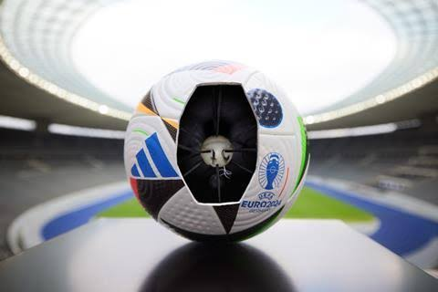
El Chip en la Cancha: la ciencia dentro de la pelota
¿Cómo saben los árbitros si una pelota cruzó la línea por un milímetro? Abrimos el balón para descubrir la física, la electrónica y la matemática que se esconden detrás de cada pase.
02 / 08
Física, biología, ambiente y fútbol: investigaciones que nacen en el aula.

¿Cómo saben los árbitros si una pelota cruzó la línea por un milímetro? Abrimos el balón para descubrir la física, la electrónica y la matemática que se esconden detrás de cada pase.

¿Alguna vez pensaste que una cancha de fútbol también puede ser un espacio para aprender a cuidar el ambiente?
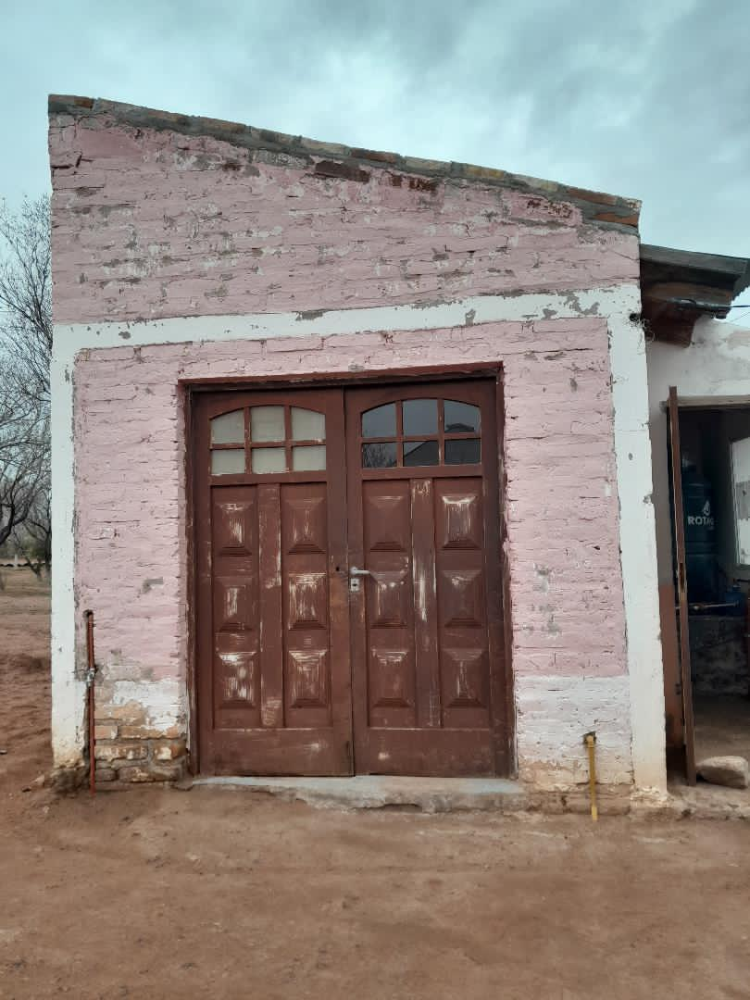
Salimos al paraje para saber de dónde viene el agua que consumimos todos los días en nuestras casas… y descubrimos que la comunidad coopera entre todos para que no nos falte.

La química está en el cuerpo de los jugadores, en los materiales y hasta en la Copa del Mundo.

Por qué debemos cuidarla y qué podemos hacer desde nuestras casas para evitar su desperdicio.
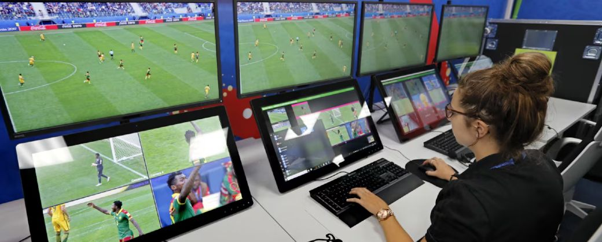
Camaras corporales, sensores, inteligencia artificial y GPS: la tecnologia que uso el arbitraje en el Mundial.
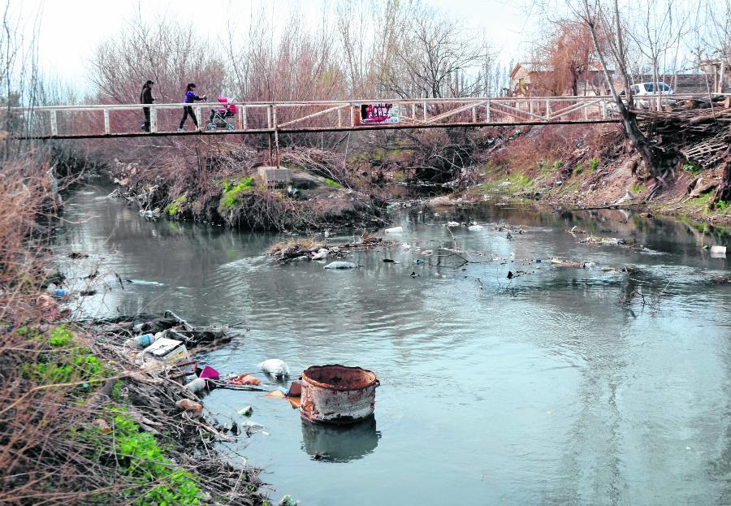
Un problema que nos afecta a todos: como la contaminacion afecta el agua, el aire y el suelo.

El agua es muy importante para nuestra vida. ¿Qué pasaría si un día faltara?
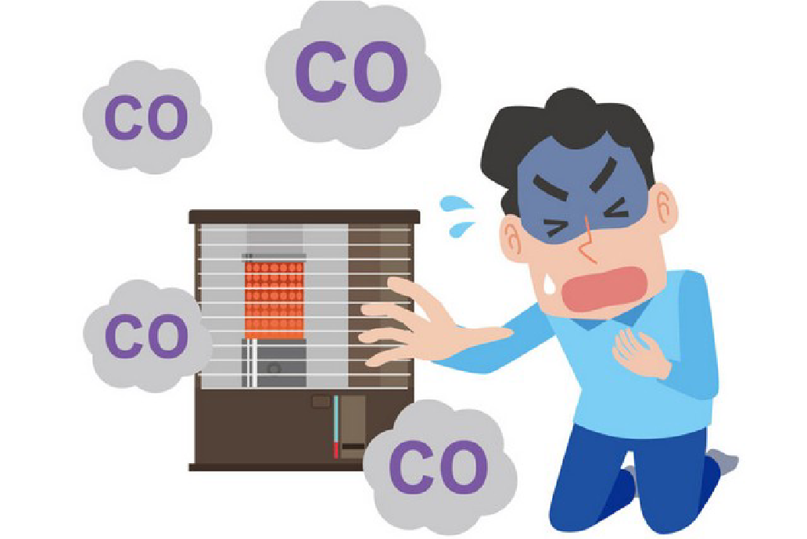
¿Por qué decimos que el monóxido de carbono es un enemigo invisible en nuestro hogar? ¿Qué artefactos debemos tener en cuenta para prevenir desgracias?
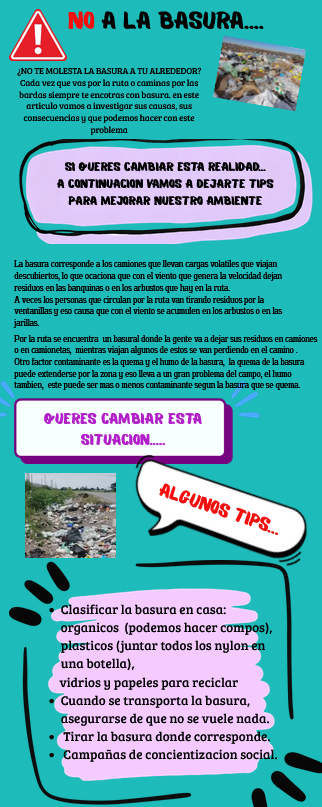
La basura que vemos en rutas y bardas tiene causas concretas: conocelas y aplicala los tips para mejorar nuestro ambiente.
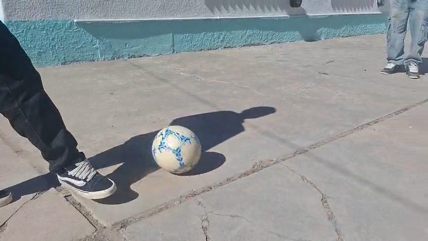
Todo permanece quieto, salvo que una fuerza lo cambie. De esto tratará el siguiente artículo.
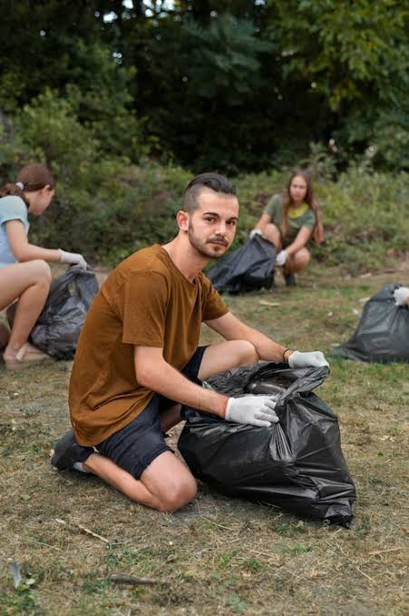
El ambiente es el espacio donde vivimos. Cuidarlo es responsabilidad de todos.

Los microbasurales se han vuelto muy comunes en nuestra región: qué son, qué daños causan y cómo podemos evitarlos.
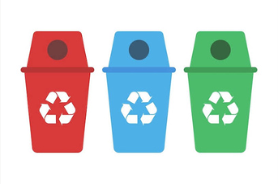
Acciones simples que podemos hacer desde casa y desde la escuela para tener un planeta más limpio.
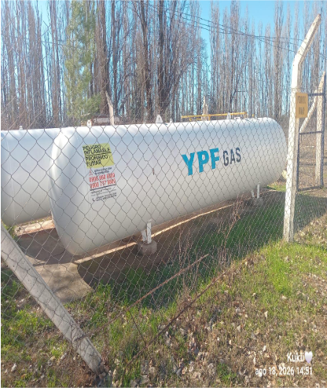
¿Qué es el monóxido? Un gas invisible y peligroso que podemos prevenir entre todos.

En este artículo hablamos sobre la pausa de hidratación y la importancia que tiene. Tiene múltiples beneficios aunque su duración es corta.
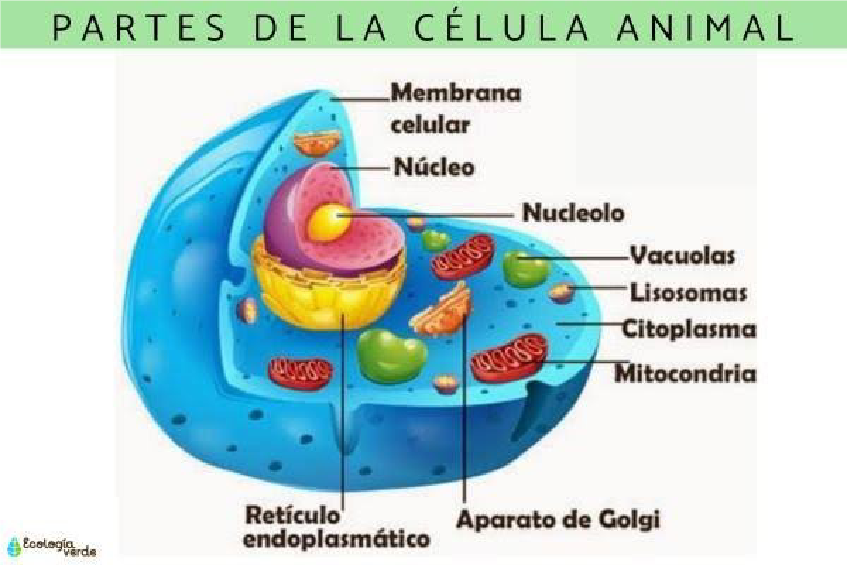
Todos estamos formados por células: la unidad básica de la vida.

Qué problemas ambientales nos afectan y qué acciones sencillas podemos realizar todos los días, también desde la escuela.

Reciclar, ahorrar y reducir: cinco ideas para cuidar el ambiente todos los días, y entenderse con la sostenibilidad.
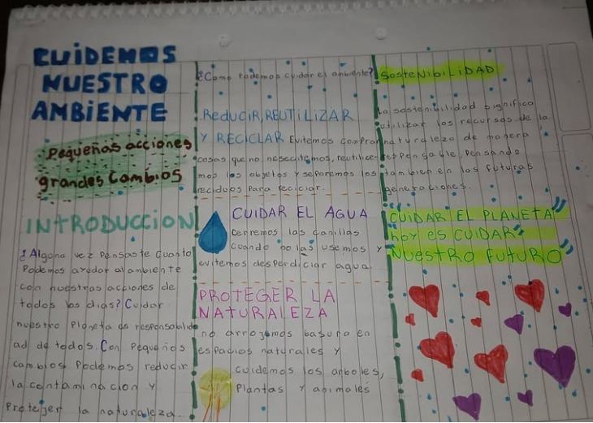
Sostenibilidad, reciclaje, agua y naturaleza: cuatro ideas concretas para cuidar el planeta con lo que hacemos todos los días.
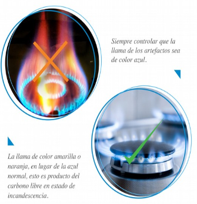
No se ve, no se huele y puede ser mortal. Conocé qué es, cómo aparece en casa y cómo prevenirlo.
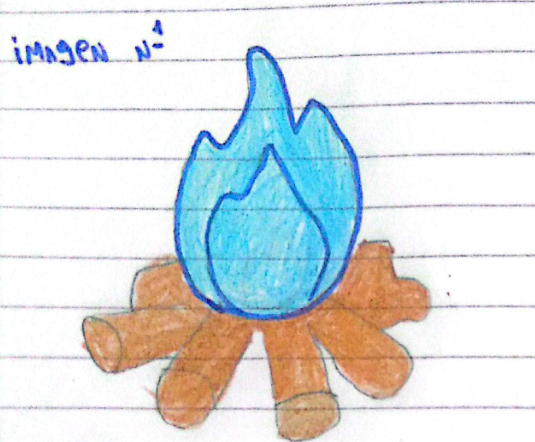
En el campo se usa mucho fuego para calentarse, y con él llega un gas que no se ve ni se huele: el **monóxido de carbono**.
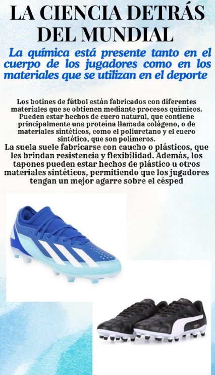
Colágeno, polímeros, caucho y sudor: qué hay detrás del equipamiento de los jugadores.
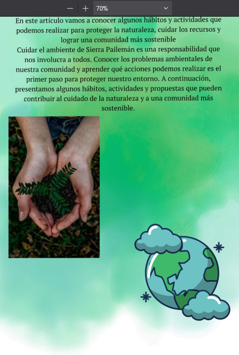
Siete acciones, cuatro propuestas comunitarias y una reflexión para mantener limpio el entorno del paraje.
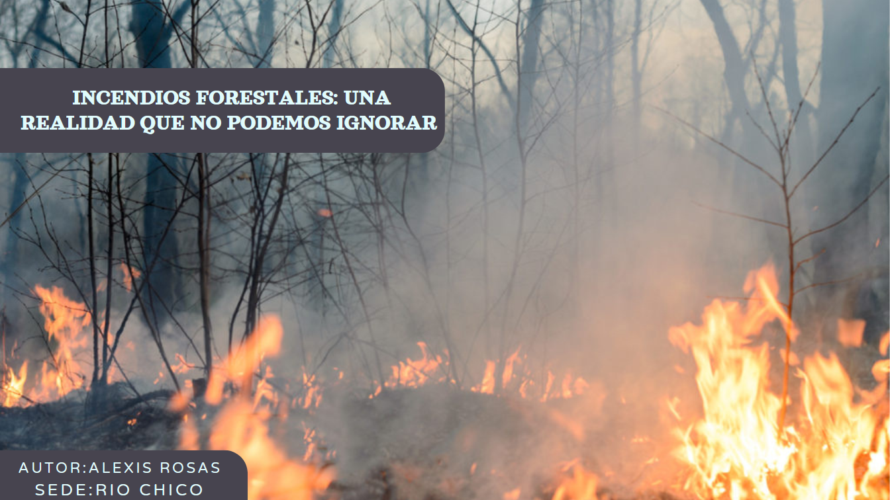
Un incendio no solo quema árboles: destruye plantas, afecta a los animales y pone en riesgo a las personas. Conoce sus causas y cómo prevenirlo.
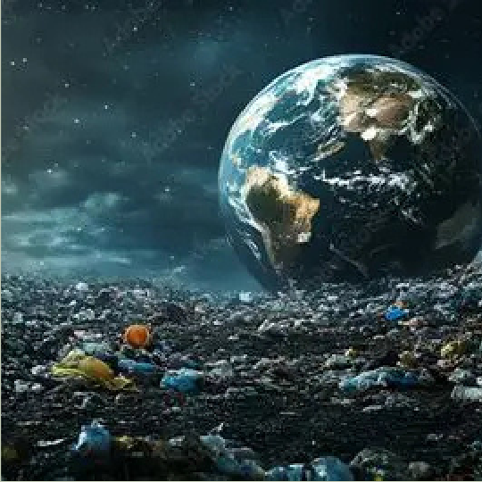
La contaminación afecta el agua, el aire y el suelo. Conocé sus causas y las pequeñas acciones diarias que ayudan a cuidar el ambiente.
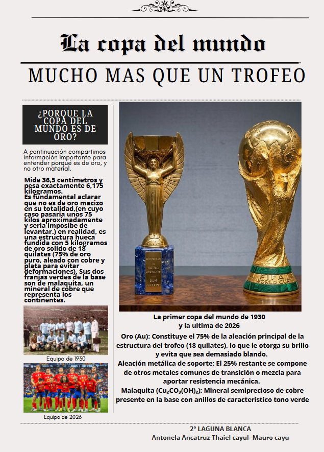
El trofeo más famoso del fútbol no es oro macizo: mide 36,5 centímetros, pesa 6,175 kilos y esconde mucha química. Descubrí por qué se eligió el oro.
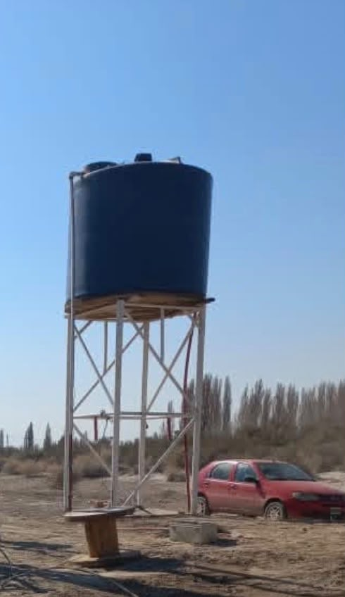
En Treneta encontramos plantas, tierra, animales y agua: conocemos de dónde sale el agua que tomamos y cómo la tierra fértil sostiene nuestros cultivos.
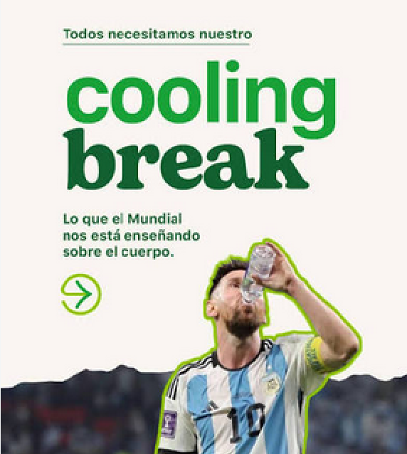
Todos necesitamos nuestro cooling break: lo que el Mundial nos está enseñando sobre el cuerpo.
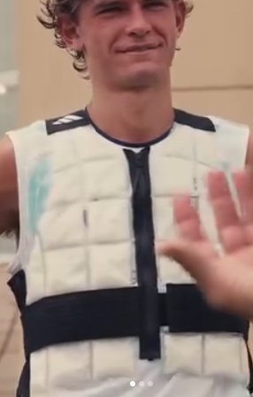
En el Mundial 2026 hubo temperaturas de hasta 46 °C. Adidas creó una tecnología para que los jugadores puedan entrenar sin complicaciones.
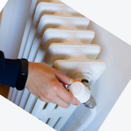
El monóxido de carbono puede causar tragedias en el hogar: consejos para prevenirlas.
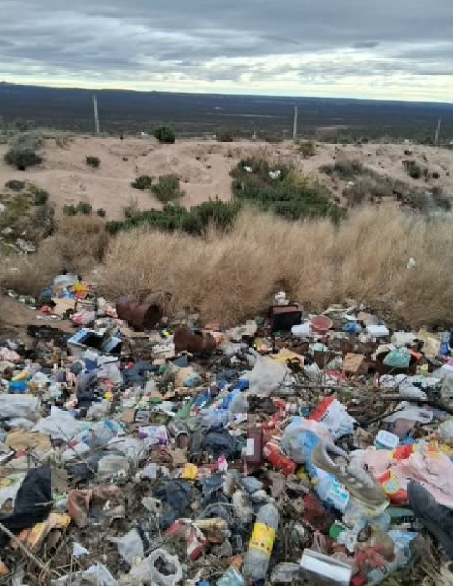
El basurero de Cerro Policía contamina el ambiente y la salud de nuestra comunidad: conocemos el problema y proponemos soluciones.

¿Qué pasa en el cuerpo de un jugador cuando corre los noventa minutos? ¿Y por qué la Copa es de oro? Detrás de cada partido del Mundial hay una reacción química.

¿Alguna vez te preguntaste qué pasa en nuestro cuerpo cuando jugamos al fútbol? Cuando corremos, saltamos y pateamos, la ciencia también está presente.
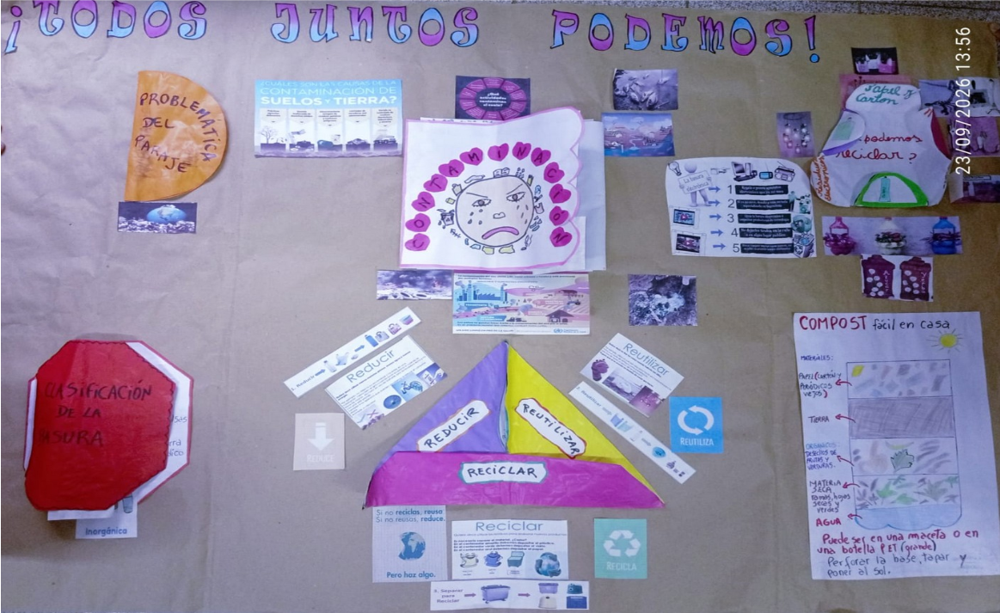
Cuidar el medio ambiente es una responsabilidad de todos. En Blancura Centro, con pequeñas acciones diarias mantenemos el paraje limpio y saludable.
¿Pensaste alguna vez en la fuerza que tienen los jugadores para poder hacer rodar la pelota? Detrás de cada corrida y cada pase hay mucha ciencia.